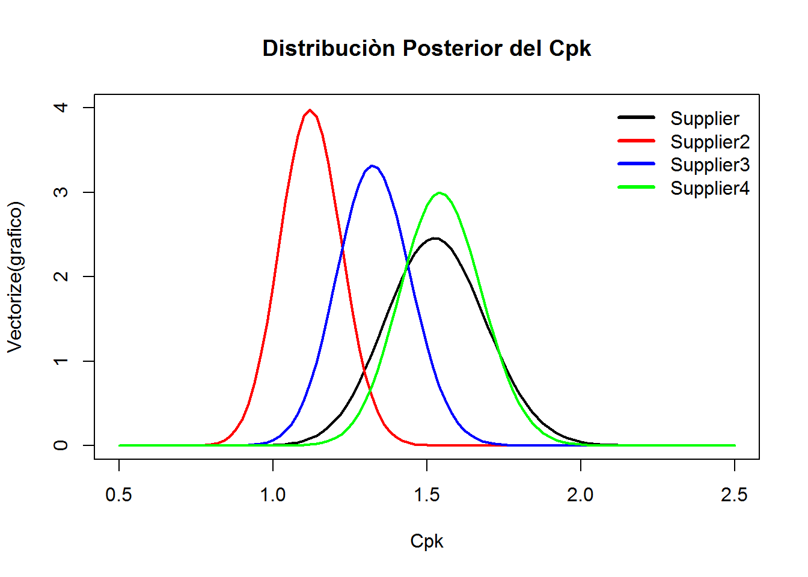
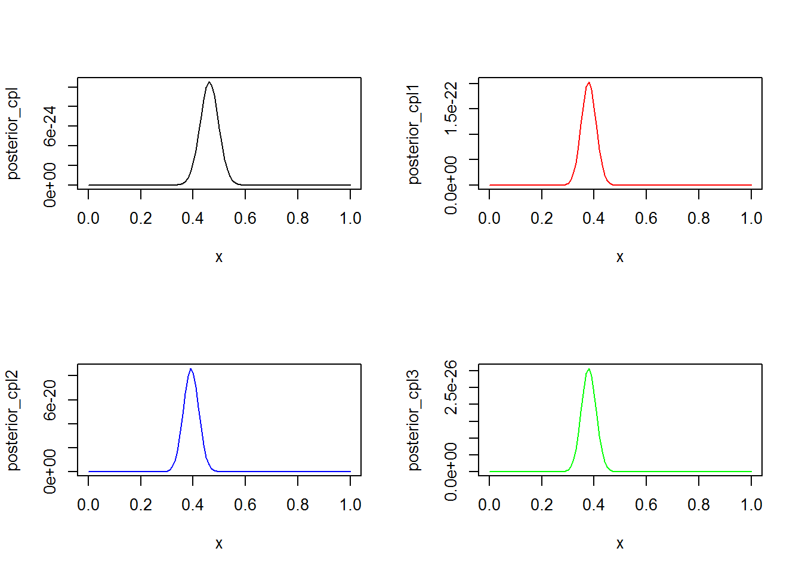

Capítulo 8 Bayesian Cps
author: “Sebastián Guerra y Estéfano Viteri”
date: “25 de enero de 2019”
8.1 1. Introducción al pensamiento Bayesiano
La metodología bayesiana consta de tres pasos fundamentales:
1. Especificar un modelo de probabilidad que incluya algún tipo de conocimiento previo (a priori) sobre los parámetros del modelo dado.
2. Actualizar el conocimiento sobre los parámetros desconocidos condicionando este modelo de probabilidad a los datos observados.
3. Evaluar el ajuste del modelo a los datos y la sensibilidad de las conclusiones a cambios en los supuestos del modelo.
La diferencia fundamental entre la estadística clásica (frecuentista) y la bayesiana es el concepto de probabilidad. Para la estadística clásica es un concepto objetivo, que se encuentra en la naturaleza, mientras que para la estadística bayesiana se encuentra en el observador, siendo así un concepto subjetivo. De este modo, en estadística clásica sólo se toma como fuente de información las muestras obtenidas suponiendo, para los desarrollos matemáticos, que se pueden tomar tamaños límite de las mismas. En el caso bayesiano, sin embargo, además de la muestra también juega un papel fundamental la información previa o externa que se posee en relación a los fenómenos que se tratan de modelizar.
8.2 2. Repaso
El concepto básico en el que se basa la estadística bayesiana es el de probabilidad condicional:
Para dos eventos A y B, \[\begin{equation} P\left ( A\mid B \right )=\frac{P\left ( A\cap B \right )}{P\left ( B \right )}\propto P\left ( A\cap B \right ) \end{equation}\]
Esta definición se puede aplicar a variables continuas o distcretas. Desde el punto de vista bayesiano debemos toma ren cuenta q todas las probabilidades son condicionadas, es decir, se conoce algo sobre los eventos.
Ley de la Probabilidad Total
Para un evento A y una partición \(B_{1},\ldots,B_{k}\) tal que \(\bigcup_{i=1}^{n}B_{i}=\Omega\) se tiene,
\[\begin{equation} P\left ( A \right )=\sum_{i=1}^{k}P\left ( A\mid B_{i} \right )P\left ( B_{i} \right ) \end{equation}\]
Ahora aplicando esta ley para variables discretas: \[\begin{equation} f\left ( x \right )= \sum_{y}f\left ( x\mid Y=y \right )P\left ( Y=y \right ) \end{equation}\]
y variables continuas:
\[\begin{equation} f\left ( x \right )= \int f\left ( x\mid y \right )f\left ( y \right )dy \end{equation}\]
El teorema de Bayes
Dados eventos \(A_1, \ldots , A_n\) y \(B\),
\[\begin{equation} P\left ( A_{i}\mid B \right )=\frac{P\left ( B\mid A_{i} \right )P\left ( A_{i} \right )}{P\left ( B \right )}= \frac{P\left ( B\mid A_{i} \right )P\left ( A_{i} \right )}{\sum_{i=1}^{n}P\left ( B\mid A_{i} \right )P\left ( A_{i} \right )}\propto P\left ( B\mid A_{i} \right )P\left ( A_{i} \right ) \end{equation}\]
en el caso de que \(X\) sea variable continua con \(f\) función de distribución tenemos:
\[ f\left ( x\mid y\right )=\frac{f\left ( y\mid x \right )f\left ( x\right )}{f\left ( y\right )}=\frac{f\left ( y\mid x\right ) f\left ( x\right )}{\int_{\mathbb{R}} f\left ( y\mid x\right )f\left ( x\right )dx} \propto f\left( y\mid x \right) f \left( x \right) \]
Media y varianza condicionales Dadas dos variables \(X\) e \(Y\) , definimos la media y varianza de \(X\) cuando \(Y = y\) como:
\[\begin{equation} E\left [ X\mid Y=y\right ]=\int x f\left ( x\mid y \right ) dx \end{equation}\]
\[\begin{equation} Var\left [ X\mid Y=y \right ]=\int \left ( x-E\left [ X\mid Y=y\right ] \right )^{2} f\left ( x\mid y \right ) \end{equation}\]
Teorema
Dadas dos variables \(X\) e \(Y\), se tiene que:
(\(i\)) \(E_{x}\left [ X \right ]=E_{y}\left [ E_{x}\left [ X\mid Y \right ] \right ]\)
(\(ii\)) \(Var_{x}\left [ X \right ]=E_{y}\left [ Var_{x}\left [ X\mid Y \right ] \right ]+ Var_{y}\left [ E_{x}\left [ X\mid Y \right ] \right ]\)
8.3 3. Definiciones y notaciones
Los índices de capacidad que se analizaran son: \[\begin{equation} C_{p}=\frac{u-l}{6\sigma} \end{equation}\]
\[\begin{equation} C_{pu}=\frac{u-\mu}{3\sigma} \end{equation}\]
\[\begin{equation} C_{pl}=\frac{\mu-l}{3\sigma} \end{equation}\]
y
\[\begin{equation} C_{pk}=\min \left ( C_{pu},C_{pl} \right ) \end{equation}\]
donde \(\mu\) es la media poblacional, \(\sigma\) es la desviación estandar poblacional, \(u\) es el límite superior de especificación y \(l\) es el límite inferior de especificación.
Sea \(y_1,y_2,\ldots,y_n\) una muestra independiente de un proceso de fabricación. En este trabajo se asumirá que \(y_i\) \((i=1,2,\ldots,n)\) son variables aleatorias independientes e idénticamente distribuidas según una distribucion normal con media \(\mu\) y varianza \(\sigma^{2}\) .
Dado que \(\mu\) y \(\sigma^{2}\) son desconocidas y no existe información previa disponible, por ello se usa la distribución previa no informativa, Jeffreys’ prior (es invariante bajo una reparametrización) \[\begin{equation} p(\mu.\sigma{2})\propto\sigma{-2} \end{equation}\] será definida para \(\mu\) y \(\sigma\).
8.4 4. La distribución posterior del índice de capacidad de proceso inferior
\(C_{pl}=\frac{\mu-l}{3\sigma}\).
Notemos que \[C_{pl}=\frac{\mu-l}{3\sigma}\]
Teorema La distribución posterior de \(t=C_{pl}\) esta dada por
\[ p\left ( t\mid \hat{t} \right )=\frac{3\sqrt{n} exp(-\frac{9nt^2}{2})}{\Gamma{\frac{v}{2}}\sqrt{2\pi}}\sum_{j=1}^{\infty}\left(\frac{9nt\hat{t}}{\sqrt{v}}\right)^j \frac{1}{j!} \frac{\Gamma{\frac{v+j}{2}}2^{\frac{j}{2}}}{(1+\frac{9n\hat{t}^2}{v})^\frac{v+j}{2}} \]
Donde
\[\hat{t}=\frac{\bar{y}-l}{3s}=\hat{C_{pl}} \] Y \[v=n-1 \]
8.4.1 __4.1 **Codigo en R__
8.5 5. Distribución posterior de: \(C_{pk}=min(C_{pl},C_{pu})\)
Cuando se tienen especificados los limites, el \(C_{p}\) y \(C_{pk}\) son usados \[C_{pk}=min(C_{pl},C_{pu})\] Teorema La distribución posterior de \(c=C_{pk}\) esta dada por
\[ p\left ( c\mid \ y\right )=\frac{3\sqrt{n}}{\sqrt{2\pi}}\int_{\frac{c^2v}{\hat{b}^2}}^{\infty} \left\lbrace exp \left(-\frac{9n}{2} \left[c-t^*\sqrt{\frac{k}{v}} \right]^2 \right)+exp \left(-\frac{9n}{2} \left[c-\hat{t}\sqrt{\frac{k}{v}} \right]^2 \right) \right\rbrace \frac{1}{2^{\frac{v}{2}}\Gamma{\left(\frac{v}{2}\right)}} k^{\frac{v}{2}-1} exp \left(-\frac{k}{2} \right) dk \]
Donde
\[v=n-1 \] \[t^*=\hat{C_{pu}}=\frac{u-\bar{y}}{3s}\] \[\hat{t}=\hat{C_{pl}}=\frac{\bar{y}-l}{3s}\] Finalmente
\[\hat{b}=\hat{C_{p}}=\frac{u-l}{6s}\]
#### Distribucion posterior del CPK
#### distribucion posterior del CPK
Supplier <- function(Cpk,sample,media,desv) {
n <- sample
v <- n-1
u <- 2.7205
s <- desv
l <- 2.6795
ybarra <- media
t1 <- (u-ybarra)/(3*s)
t2 <- (ybarra-l)/(3*s)
b1 <- (u-l)/(6*s)
cte <- ((3*sqrt(n))/(sqrt(2*pi)))
a <- ((Cpk^2)*v)/((b1)^2)
b <- Inf
P <- function(k){(exp((-(9*n)/2)*(Cpk-t1*(sqrt(k/v)))^2)+exp((-(9*n)/2)*(Cpk-t2*(sqrt(k/v)))^2))*(1/((2^(v/2))*gamma(v/2)))*(k^((v/2)-1))*exp(-k/2)}
Q <- integrate(f = Vectorize(P),lower = a,upper = b)
return(cte*(Q$value))
}8.6 6. Ejemplo
####VALORES INICIALES
sample <- c(50,75,70,75)
medias <- c(2.7048,2.7019,2.6979,2.6972)
desviaciones <- c(0.0034,0.0055,0.0046,0.0038)
esp <- c( 2.7205,2.6795)
#Función a integrar
J <- function(k,n,v,Cpk,t1,t2) {(exp((-(9*n)/2)*(Cpk-t1*(sqrt(k/v)))^2)+exp((-(9*n)/2)*(Cpk-t2*(sqrt(k/v)))^2))*(1/((2^(v/2))*gamma(v/2)))*(k^((v/2)-1))*exp(-k/2)}
grafico <- function(x)
{
return(Supplier(Cpk = x,sample = sample[1],media = medias[1],desv = desviaciones[1]))
}
grafico1 <- function(x)
{
return(Supplier(Cpk = x,sample = sample[2],media = medias[2],desv = desviaciones[2]))
}
grafico2 <- function(x)
{
return(Supplier(Cpk = x,sample = sample[3],media =medias[3],desv = desviaciones[3]))
}
grafico3 <- function(x)
{
return(Supplier(Cpk = x,sample = sample[4],media = medias[4],desv = desviaciones[4]))
}
k<-4
plot(Vectorize(grafico),xlim=c(0.5,2.5),ylim=c(0,k),col="black",lwd=2,main= "Distribuciòn Posterior del Cpk",xlab = "Cpk")
plot(Vectorize(grafico1),xlim=c(0.5,2.5),ylim=c(0,k),add=TRUE,col="red",lwd=2)
plot(Vectorize(grafico2),xlim=c(0.5,2.5),ylim=c(0,k),add=TRUE,col="blue",lwd=2)
plot(Vectorize(grafico3),xlim=c(0.5,2.5),ylim=c(0,k),add=TRUE,col="green",lwd=2)
legend("topright",col=c("black","red","blue","green"),legend =c("Supplier","Supplier2","Supplier3","Supplier4"), lwd=3, bty = "n")
Para encontrar la media y varianza posteriores se usará el método por Monte-Carlo y el método de Aceptación-Rechazo.
#######GENERACION DE DATOS DE LA DISTRIBUCION POSTERIOR POR MEDIO DE ACEPTACION RECHAZO
## Función que acota a las posteriores del Cpk
plot(Vectorize(grafico),xlim=c(0.5,2.5),ylim=c(0,6),col="black",lwd=2,main= "Funciòn que acota al Cpk",xlab = "Cpk")
plot(Vectorize(grafico1),xlim=c(0.5,2.5),ylim=c(0,6),add=TRUE,col="red",lwd=2)
plot(Vectorize(grafico2),xlim=c(0.5,2.5),ylim=c(0,6),add=TRUE,col="blue",lwd=2)
plot(Vectorize(grafico3),xlim=c(0.5,2.5),ylim=c(0,6),add=TRUE,col="green",lwd=2)
grafico4 <- function(x)
{
return(4*dnorm(x = x,mean = 1.3,sd = 0.3))
}
plot(grafico4,xlim=c(0.5,2.5),ylim=c(0,6),add=TRUE,col="brown",lwd=2)aceptacion_rechazo <- function(T) {
s <- vector()
num <- 100 ##numero de datos
i<-1
while (i<=num) {
Y <- rnorm(1.3,0.3)
U <- runif(1,0,1)
if(U <= (T(Y)/(4*dnorm(x = Y,mean = 1.3,sd = 0.3))))
{
s[i]<-Y
i <- i+1
}
}
return (s)
}
Proveedor_1 <- round(c(mean(aceptacion_rechazo(grafico)),sd(aceptacion_rechazo(grafico))),4)
Proveedor_2 <- round(c(mean(aceptacion_rechazo(grafico1)),sd(aceptacion_rechazo(grafico1))),4)
Proveedor_3 <- round(c(mean(aceptacion_rechazo(grafico2)),sd(aceptacion_rechazo(grafico2))),4)
Proveedor_4 <- round(c(mean(aceptacion_rechazo(grafico3)),sd(aceptacion_rechazo(grafico3))),4)
Generando_muestras <- data.frame(row.names =c("Media Posterior","Varianza Posterior"),Proveedor_1,Proveedor_2,Proveedor_3,Proveedor_4)### MEDIA DE LA DISTRIBUCION POSTERIOR POR MONTECARLO
media_posterior <- function(sample,media,desv) {
n <- sample
v <- n-1
u <- 2.7205
s <- desv
l <- 2.6795
ybarra <- media
t1 <- (u-ybarra)/(3*s)
t2 <- (ybarra-l)/(3*s)
b1 <- (u-l)/(6*s)
cte <- ((3*sqrt(n))/(sqrt(2*pi)))
N <- 1000000
M <- 20
x <- 0
y <- 0
c <- -1000
d <- 1000
for (j in 1:M) {
Cpk <- runif(1)*(d-c)+c
a <- (Cpk^2 *v)/(b1)^2
b <- 10000
for (i in 1:N) {
k <- runif(1)*(b-a)+a
x <- x +{(exp((-(9*n)/2)*(Cpk-t1*(sqrt(k/v)))^2)+exp((-(9*n)/2)*(Cpk-t2*(sqrt(k/v)))^2))*(1/((2^(v/2))*gamma(v/2)))*(k^((v/2)-1))*exp(-k/2)}
}
y <- y + Cpk*cte*x
}
return(((d-c)/N)*y)
}
post_media_mc <- vector()
post_media_mc [1] <- media_posterior(sample = sample[1],media = medias[1],desv = desviaciones[1])
post_media_mc [2] <- media_posterior(sample = sample[2],media = medias[2],desv = desviaciones[2])
post_media_mc [3] <- media_posterior(sample = sample[3],media = medias[3],desv = desviaciones[3])
post_media_mc [4] <- media_posterior(sample = sample[4],media = medias[4],desv = desviaciones[4])8.7 7. Intervalos de confianza
Si el interés es construir intervalos de credibilidad simultáneos para todas las diferencias por pares, se puede usar una versión bayesiana de los intervalos de confianza simultáneos de Tukey. Definimos
\[ T^{(2)}=\max_{l} \left\lbrace \left(\left(C_{pk}^{(l)}-E\left(C_{pk}^{(l)}\mid \underline{y} \right)\right) \mid \underline{y} \right) \right\rbrace - \min_{l} \left\lbrace \left(\left(C_{pk}^{(l)}-E\left(C_{pk}^{(l)}\mid \underline{y} \right)\right) \mid \underline{y} \right) \right\rbrace \]
donde \(T_{\alpha}^{(2)}\) es el punto porcentual superior \(\alpha\) de la distribución de \(T^{(2)}\). Los intervalos de credibilidad simultáneos del \(100(1-\alpha)\%\) para todas las diferencias de pares están dados por
\[ E\left(C_{pk}^{(i)}\mid \underline{y} \right)-E\left(C_{pk}^{(j)}\mid \underline{y} \right) \pm T_{\alpha}^{(2)} \]
En donde \[ i=1,2,\dots,4 \\ j=1,2,\dots,4 \\ i\neq j \]
100,000 simulaciones Monte Carlo se usaron para calular \(E\left(C_{pk}^{(i)}\mid \underline{y} \right)\),\(E\left(C_{pk}^{(j)}\mid \underline{y} \right)\) y \(T_{\alpha}^{(2)}\)
El procedimiento de simulación es el siguiente:
Simulamos \(k\) a partir de la distribución \(\chi_{n-1}^2\)
Calcular \[\sigma_{i}^{2*}=\frac{(n-1)s_{i}^{2}}{k}\]
En donde \(*\) indica un valor simulado \(i=1,2,\dots,4\)
Notemos que \[\sigma_{i}^{*}=\sqrt{\sigma_{i}^{2*}} \]
Simulamos \(\mu_{i}^{*}\) usando el hecho que \[\mu_{i}\mid\sigma_{i}^{2},\bar{y_{i}} \backsim N\left(\bar{y_{i}},\frac{\sigma_{i}^{2}}{n} \right) \]
- Veamos que por definición \(C_{pk}^{(i)}\) puede ser simulado por \[C_{pk}^{(i)}=min\left(\frac{u-\mu_{i}{*}}{3\sigma_{i}^{*}},\frac{\mu_{i}{*}-l}{3\sigma_{i}^{*}}\right) \]
Repetir los pasos de 1 al 5 \(\hat{l}\). Para este ejemplo se tiene \(\hat{l}=100,000\)
__7.1 **Codigo en R__
####Intervalos de CONFIANZA Y FUNCION T_{2}
ganesh <- function(sample,medias,desviaciones,ite,esp)
{
desv <- vector()
cpk <- matrix(nrow = length(medias),ncol = ite)
for (j in 1:4) {
for (i in 1:ite) {
k <- rchisq(1,df = sample[j]-1)
desv <- sqrt( ((sample[j]-1)*desviaciones[j]^2)/k )
mu <- rnorm(1,medias[j],(desviaciones[j]^2)/sample[j])
cpk[j,i] <- min((esp[1]-mu)/(3*desv),(mu-esp[2])/(3*desv))
}
}
return(cpk)
}
ganesho <- ganesh(sample = sample,medias = medias,desviaciones = desviaciones,ite = 100000,esp=esp )
esperanza <- apply(ganesho,FUN = mean,MARGIN = 1)
T1 <- apply(X = ganesho-esperanza,MARGIN = 2,FUN = max)
T2 <- apply(X = ganesho-esperanza,MARGIN = 2,FUN = min)
Tdos <- T1-T2
hist(Tdos,breaks = 50,ylim = c(0,7000),xlim = c(0,1),main = "Distribucion T_{2}")q<- quantile(Tdos, c(.95, .9, .8747))
Intervalo1 <- c("95% Interval -",
round(c(esperanza[1]-esperanza[2]-q[1],
esperanza[1]-esperanza[3]-q[1],
esperanza[1]-esperanza[4]-q[1],
esperanza[2]-esperanza[3]-q[1],
esperanza[2]-esperanza[4]-q[1],
esperanza[3]-esperanza[4]-q[1]),4))
Intervalo11 <- c("95% Interval +",
round(c(esperanza[1]-esperanza[2]+q[1],
esperanza[2]-esperanza[3]+q[1],
esperanza[3]-esperanza[4]+q[1],
esperanza[3]-esperanza[3]+q[1],
esperanza[3]-esperanza[4]+q[1],
esperanza[3]-esperanza[4]+q[1]),4))
Intervalo2 <- c("90% Interval -",
round(c(esperanza[1]-esperanza[2]-q[2],
esperanza[1]-esperanza[3]-q[2],
esperanza[1]-esperanza[4]-q[2],
esperanza[2]-esperanza[3]-q[2],
esperanza[2]-esperanza[4]-q[2],
esperanza[3]-esperanza[4]-q[2]),4))
Intervalo22 <- c("90% Interval +",
round(c(esperanza[1]-esperanza[2]+q[2],
esperanza[2]-esperanza[3]+q[2],
esperanza[3]-esperanza[4]+q[2],
esperanza[3]-esperanza[3]+q[2],
esperanza[3]-esperanza[4]+q[2],
esperanza[3]-esperanza[4]+q[2]),4))
Intervalo3 <- c("87.47% Interval -",
round(c(esperanza[1]-esperanza[2]-q[3],
esperanza[1]-esperanza[3]-q[3],
esperanza[1]-esperanza[4]-q[3],
esperanza[2]-esperanza[3]-q[3],
esperanza[2]-esperanza[4]-q[3],
esperanza[3]-esperanza[4]-q[3]),4))
Intervalo33 <- c("87.47% Interval +",
round(c(esperanza[1]-esperanza[2]+q[3],
esperanza[2]-esperanza[3]+q[3],
esperanza[3]-esperanza[4]+q[3],
esperanza[3]-esperanza[3]+q[3],
esperanza[3]-esperanza[4]+q[3],
esperanza[3]-esperanza[4]+q[3]),4))
col <- c("E(Cpk i)-E(Cpk j)","Supplier-Supplier2","Supplier-Supplier3","Supplier-Supplier4","Supplier2-Supplier3","Supplier2-Supplier4","Supplier3-Supplier4")
misDatos <- data.frame(row.names=col,Intervalo1,Intervalo11,Intervalo2,Intervalo22,Intervalo3,Intervalo33)
misDatos## Intervalo1 Intervalo11 Intervalo2
## E(Cpk i)-E(Cpk j) 95% Interval - 95% Interval + 90% Interval -
## Supplier-Supplier2 -0.0522 0.8679 0.0015
## Supplier-Supplier3 -0.257 0.2552 -0.2033
## Supplier-Supplier4 -0.4758 0.2413 -0.4221
## Supplier2-Supplier3 -0.6649 0.46 -0.6112
## Supplier2-Supplier4 -0.8837 0.2413 -0.83
## Supplier3-Supplier4 -0.6788 0.2413 -0.6251
## Intervalo22 Intervalo3 Intervalo33
## E(Cpk i)-E(Cpk j) 90% Interval + 87.47% Interval - 87.47% Interval +
## Supplier-Supplier2 0.8143 0.0199 0.7959
## Supplier-Supplier3 0.2015 -0.1849 0.1831
## Supplier-Supplier4 0.1876 -0.4037 0.1692
## Supplier2-Supplier3 0.4064 -0.5928 0.388
## Supplier2-Supplier4 0.1876 -0.8116 0.1692
## Supplier3-Supplier4 0.1876 -0.6068 0.16928.8 8. Distribución posterior de:\(C_{pl}\) y \(C_{pu}\)
Podría ser interesante observar también las distribuciones posteriores de \(C_{pl}=\frac{\mu-l}{3\sigma}\) y \(C_{pu}=\frac{u-\mu}{3\sigma}\). La distribución posterior de \(C_{pl}\) esta dada por \[ p\left ( t\mid \hat{t} \right )=\frac{3\sqrt{n} exp(-\frac{9nt^2}{2})}{\Gamma{\frac{v}{2}}\sqrt{2\pi}}\sum_{j=1}^{\infty}\left(\frac{9nt\hat{t}}{\sqrt{v}}\right)^j \frac{1}{j!} \frac{\Gamma{\frac{v+j}{2}}2^{\frac{j}{2}}}{(1+\frac{9n\hat{t}^2}{v})^\frac{v+j}{2}} \] como vimos anteriormente. Una forma mucho más fácil de obtener la distribución posterior es simular un gran número de distribuciones posteriores condicionales. El promedio de estas distribuciones condicionales es entonces la distribución posterior incondicional de \(C_{pl}\). This procedure is called the Rao-Blackwell method.
8.8.1 __8.1 **Codigo en R__
####FUNCION POSTERIOR DEL CPL
posterior_di<-function(inf,y,l,s,n,t){
t_techo<-(y-l)/(3*s)
v<-n-1
c<-(3*sqrt(n)*exp((-9*n*(t^2))/2))/(gamma(v/2)*sqrt(2*pi))
g<-0
for (j in 0:inf) {
g <- g+(((9*n*t*t_techo)/sqrt(v))^j)*(1/factorial(j))*((gamma((v+j)/2)*(2^(j/2)))/(1+((9*n*(t_techo^2))/v))^((v+j)/2))
}
return(c*g)
}
max1 <- 100
posterior_cpl<-function(x){
return(posterior_di(t = x,inf = max1,y = medias[1],l =esp[2],s = desviaciones[1],n=sample[1]))
}
posterior_cpl1<-function(x){
return(posterior_di(t = x,inf = max1,y = medias[2],l =esp[2],s = desviaciones[2],n=sample[2]))
}
posterior_cpl2<-function(x){
return(posterior_di(t = x,inf = max1,y = medias[3],l =esp[2],s = desviaciones[3],n=sample[3]))
}
posterior_cpl3<-function(x){
return(posterior_di(t = x,inf = max1,y = medias[4],l =esp[2],s = desviaciones[4],n=sample[4]))
}
par(mfrow=c(2,2))
plot(posterior_cpl,col="black")
plot(posterior_cpl1,col="red")
plot(posterior_cpl2,col="blue")
plot(posterior_cpl3,col="green")
8.9 9. Conclusiones
- Como primer punto se notó que para la aproximación de la integral propuesta en el literal 5 es mejor usar una integración numérica puesto que la aproximación por Monte Carlo, computacionalmente es muy costosa. Esto lo hemos podido evidenciar ya que planteamos un código para cada método, y el resultado arrojó que el método de Monte Carlo se demoraba horas, a diferencia de la integración numérica en donde se obtuvo los resultados en par de minutos. Si la integral es en más de 5 dimensiones se recomiendo usar el método de Monte Carlo.
- Durante la realización del proyecto, específicamente para hallar la media y varianza posteriores de los \(C_{pk}\), se vio la necesidad de utilizar un algoritmo de aceptación-rechazo para generar una muestra que siga la distribución posterior, con lo cual se observó que se debe usar una función cercana para tener una rápida formación de la muestra
- Del grafico obtenido en el literal 6 se puede deducir que el proveedor 1 y 4 son mejores puesto que las medias de los \(C_{pk}\) son mayores que 1.5 y la teoría nos dice que si un \(C_{pk}\) es mayor que 1.25 se tiene que el proceso es capaz, notemos que el proveedor 3 tiene su media en 1.32, es decir, ese proceso es capaz pero no en la medida que son 1 y 4. Finalmente como el proveedor 4 tiene menos variabilidad, se lo considerará como el mejor.
- Por otro lado el hecho de suponer que la muestra sigue una distribución normal y usando la función de Jeffrey como función a priori, se dedujo que la distribución posterior del \(C_{pk}\) sigue una normal con media cercana al \(\hat{C_{pk}}\) (\(C_{pk}\) estimado).
- Finalmente se cree que el método Bayesiano puede llegar a ser más general en comparación al método clásico, puesto que podemos plantear una función a priori que describa de cierta forma el parámetro que se pretende analizar. ___